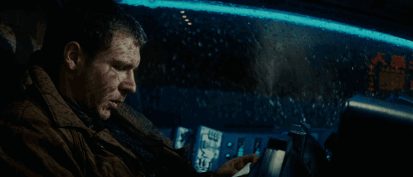
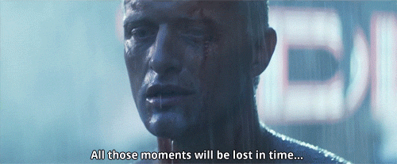

Blade Runner
Sinopsis
En esta pestaña, podéis encontrar la trama de la película, y alguna imágen animada muy chula!
Blade Runner es una película neo-noir y de ciencia ficción estadounidense dirigida por Ridley Scott, estrenada en 1982.
Fue escrita por Hampton Fancher y David Webb Peoples, y el reparto se compone de Harrison Ford, Rutger Hauer, Sean Young,
Edward James Olmos, M. Emmet Walsh, Daryl Hannah, William Sanderson, Brion James, Joe Turkel y Joanna Cassidy.
Está basada parcialmente en la novela de Philip K. Dick ¿Sueñan los androides con ovejas eléctricas? (1968). Es la primera película de la franquicia Blade Runner.

Inicialmente Blade Runner recibió críticas mixtas de parte de la prensa especializada. Unos se mostraron confundidos y decepcionados de que no tuviese el ritmo narrativo
que se esperaba de una película de acción, mientras otros apreciaban su ambientación y complejidad temática. La película no obtuvo buenos resultados de taquilla en los
cines norteamericanos, pero fue posteriormente revalorizada en el mercado doméstico hasta convertirse en una película de culto, siendo considerada una de las mejores películas
de ciencia ficción y una precursora del género ciberpunk. Fue candidata a dos Óscar (mejor dirección artística y mejores efectos visuales), ganó tres Premios BAFTA de ocho
nominaciones, y la banda sonora compuesta por Vangelis fue nominada al Globo de Oro.

La acción transcurre en una versión distópica de la ciudad de Los Ángeles, EE. UU., durante el mes de noviembre de 2019. Describe un futuro en el que, mediante bioingeniería, se
fabrican humanos artificiales denominados replicantes, a los que se emplea en trabajos peligrosos y como esclavos en las «colonias del mundo exterior» de la Tierra.
Fabricados por Tyrell Corporation para ser «más humanos que los humanos» —especialmente el modelo Nexus-6—, son indistinguibles físicamente de un humano, aunque tienen una
mayor agilidad y fuerza física, y carecen teóricamente de la misma respuesta emocional y empática. Los replicantes fueron declarados ilegales en la Tierra tras un sangriento
motín ocurrido en una colonia exterior. Un cuerpo especial de la policía, los blade runners, se encarga de identificar, rastrear y matar —o «retirar», en términos de la propia
policía— a los replicantes fugitivos que se encuentran en la Tierra. Con un grupo de replicantes suelto en Los Ángeles, Rick Deckard, un «viejo» blade runner, es sacado de su semi-retiro para eliminarlos.